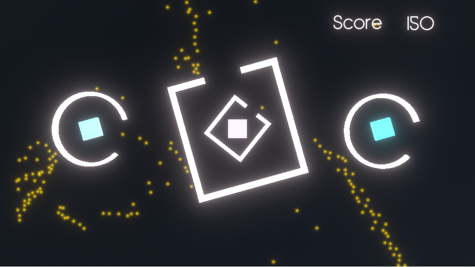

Unity(VR/ゲーム制作)
VR
- 光速が遅くなった時の色の見え方
- 時計台からの脱出
2018年度の MACS (京都大学理学部の教育プログラム)で作った作品です。車を操作して、速度と位置によって左右の物体の色の見え方が変わる様子を見ます。
他にもUnityで、VR空間を移動したり物を降らせたり掴んだりといった基本的な動作は実装したことがあります。

京都大学のシンボル、時計台から脱出するゲームです。建物の3Dモデルも自分で作成しました。
unity1week
これまでに6回投稿しました。タイトルをクリックでunityroomのページへジャンプします。
- おさかなさがし
- ハミングバード
- カップル増やし in 花火大会
- TOU目I脱出
- 花粉回収 
- あつめルンバ

魚へんの漢字の読みを選ぶゲームです。
鳥になって花の蜜を集めるゲームです。
花火大会で、花火の写真を綺麗に撮るゲームです。
上手く透明になって、見つからないように脱出するゲームです。
タイミング良く箱を回転させて、花粉を集めるゲームです。

ルンバになってゴミを集めるゲームです。これは3人で作り、私はシェーダーとゴミの処理などを担当しました。
AR/VR
JavaScript
- AR年賀状
- VR年賀状
- VR年賀状
- バーチャル探索デモページ


2019年の年賀状で作ったものです。タイトルのリンクにアクセスし、上の画像(マーカー)にかざすと表示されます。
2020年の年賀状で作ったものです。ポータルのような表現を取り入れました。
2021年の年賀状で作ったものです。VR空間内で、おみくじを引くことができます。

アルバイト先(SUSラボ)の案件で作成したものです。青いボタンをクリックすることでマップ画面から360度画像のページに遷移します。360度画像を差し替えれば、簡単にバーチャル散策Webページが出来ます。
6D.ai
- アリシアちゃんとお出かけアプリ
6D.aiというサービスを使って作ったアプリです。 単眼カメラでオクルージョンカリングが出来るので本当にそこにいるようにモデルを配置できます。個人用なので配布はしていません。
LINE
- ワードウルフGMBot
- LINE Clova スキル

Google Apps ScriptとLINEのAPIを使って作った、ワードウルフのゲームマスターをしてくれるBotです。
呼びかけると特定のテキストを話すスキルや、LINEにメッセージを送信するスキルなどを作成したことがあります。
GLSL
- 練習作品集
勉強中ですが、GLSLのみで作ったものを載せています。
その他
- Excelを用いた浸水被害の予想
- ポートフォリオ

気象庁から出ている京都市の過去の降水量と京都市情報館の京都市域の浸水履歴のデータを、Excelを用いて回帰分析し、Cesium.jsを用いて可視化したものです。水色の面が赤い面より上にある地域は、浸水の危険性が高いという予想です。

このサイトです。トップページの背景は、GLSLで描画しています。サイトデザインも自分で考えました。